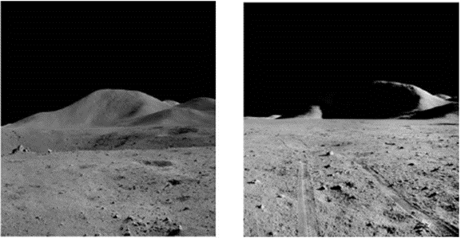
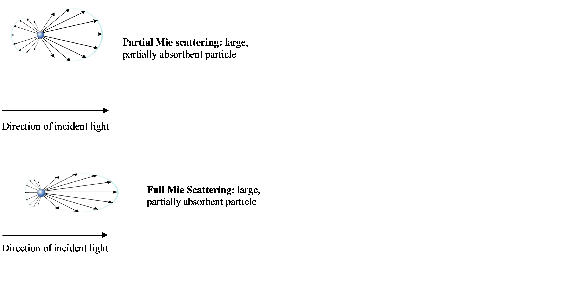
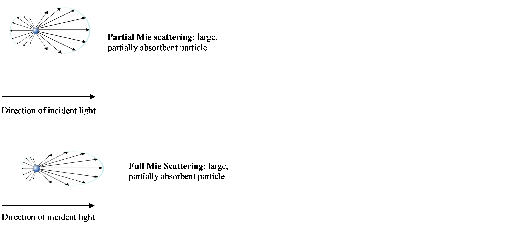

Apollo Missons
Upon landing on the Moon, the Apollo astronauts encountered an environment where the visual-sensory cues used for depth and distance perception on Earth were no longer reliable. Astronauts significantly underestimated the sizes of craters, hill slopes and distances to landmarks. Many faced unanticipated challenges when traversing lunar terrain, such as physical overexertion and the depletion of oxygen resources (4-8). It is hypothesized that among the most critical sources of perceptual errors are the unique reflectance properties of the lunar surface and the absence of an Earth-like atmosphere on the Moon (6,9). The lack of an atmosphere, or “exosphere” on the Moon causes dramatic changes in the scattering of light across the lunar surface and limits depth and distance perception of terrain (10,8).

The lack of aerial (atmospheric) perspective on the Moon also limits the ability to differentiate distances between two landmarks. This increases the clarity of distant objects which make them appear much closer and caused many astronauts to underestimate distances to craters or hills during navigation (10).


However, this benefit was often counteracted by deep shadows that limited depth perceptions of slope in low sun elevation. Astronaut Al Bean reported the formation of deep shadows that limited perception of depth and slope in low sun elevation, which caused him to overestimate an 11° slope of Surveyor Crater by almost 30° when it was partially concealed by shadows (7, 10). The dramatic effects of sun elevation on the Moon are caused by the characteristic inconsistencies of light scattering in the exosphere which can dramatically change as a function of reflectance angle (20). In varying degrees of sun elevation, this form of scattering can create the inverse effect of backscatter by creating an abnormal distribution of light across an object’s surface, causing light to refract in a different direction that does not reach the observer and concealing the object completely (13).

In the LPVR lab, Unity 3D VR renderings were created in 90° (left) 60° (middle) and 30° (right) sun elevation on the Moon to replicate the dramatic, abrupt changes in visibility experienced by Apollo astronauts.


 
